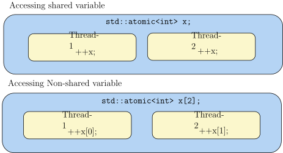
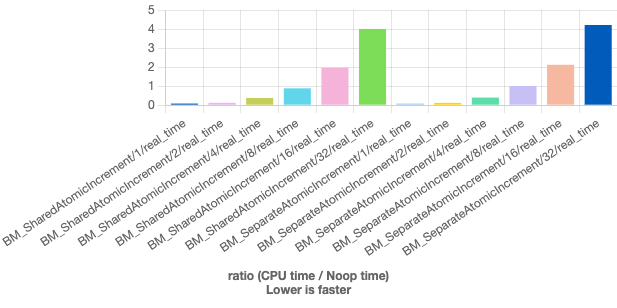
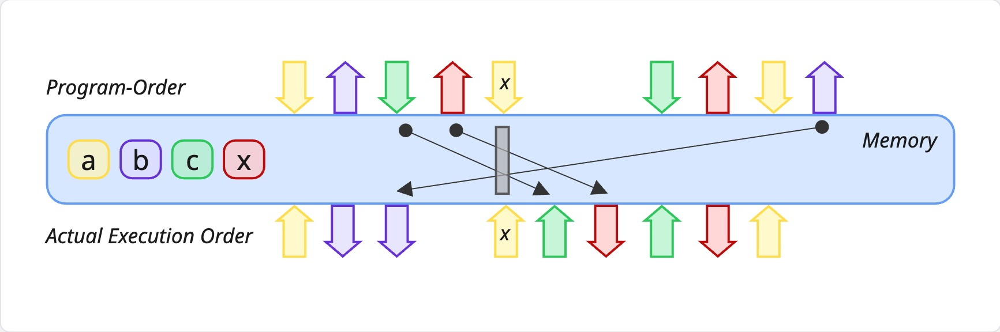
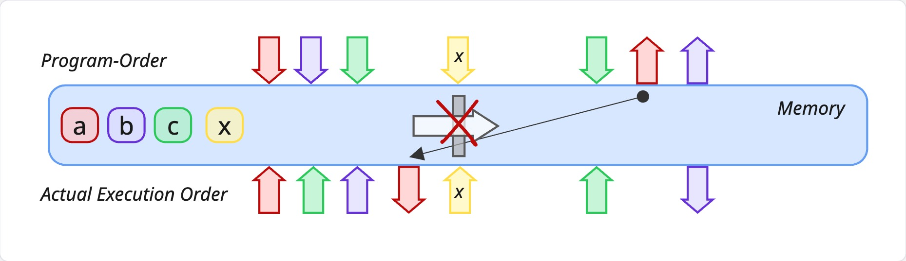

The itikz extension is already loaded. To reload it, use:
%reload_ext itikzC++ Atomics
Introduction to Atomic Operations
Atomic operations are indivisible. An atomic operation is any operation that is guaranteed to execute as a single transaction. At a low-level, atomic operations are special hardware instructions.
Consider a shared variable counter initialized to 0. The assembly instructions for incrementing this counter show that it requires multiple CPU instructions: load the value from memory into a register, add 1 to the register, and store the result back to memory. This multi-step process creates opportunities for race conditions in multi-threaded code.
Using atomic types and operations solves this problem by using special CPU instructions like lock add that guarantee the entire operation completes as a single, indivisible unit.
Generated Assembly - Non-Atomic
Atomic Increment
Using atomic types and operations:
Generated Assembly:
Atomic operations allow threads to read, modify and write indivisibly and can also be used as synchronization primitives. Atomic operations must be provided by the CPU (as in the lock add instruction).
Operations on std::atomic<T>
Explicit reads and writes:
Atomic exchange:
exchange is an atomic swap - a read-modify-write done atomically. It reads the old value, replaces it with the new value and guarantees that nobody can get in there in between.
Compare-and-Swap (CAS)
Compare-and-swap (conditional exchange):
Why is CAS So Special?
Compare-and-swap (CAS) is used in most lock-free algorithms. Consider this example of atomic increment with CAS. Pretty much every lock-free algorithm is centered around a loop like this. We want to increment x. First, we read the atomic value and store it in a local x0. We hope nobody got to x before us, that x hasn’t changed. If that’s true, we change it atomically to the desired value (which could be an increment, decrement, multiplication by 2, etc.). If nobody else changed x, we did our increment atomically. CAS returns true and the loop ends.
If somebody did change x, CAS fails and returns false. The changed value of x is updated in x0, so we don’t have to read again. We continue to the next iteration and keep trying, until our compare-and-swap beats everyone else’s and gets that increment in.
Additional Atomic Operations
For integer T:
fetch_add() doesn’t just add atomically. It increments atomically, but also returns the old value (the fetch part). So it returns the old value and adds the increment, all atomically.
Also available: fetch_sub, fetch_and(), fetch_or() and fetch_xor().
Note: If you have multiple atomic operations, their composition is not atomic.
Do Atomic Operations wait on Each Other?
Atomic operations are lock-free, maybe even wait-free. It doesn’t mean they don’t wait on each other. Atomic operations do wait for cache-line access.
Show the code
%%itikz --temp-dir --tex-packages=tikz --tikz-libraries=arrows.meta --implicit-standalone
\tikzset{every picture/.style={line width=0.75pt}} %set default line width to 0.75pt
\begin{tikzpicture}[x=0.75pt,y=0.75pt,yscale=-1.5,xscale=1.5,font=\Large]
%uncomment if require: \path (0,249); %set diagram left start at 0, and has height of 249
%Rounded Rect [id:dp7226624209327404]
\draw [fill={rgb, 255:red, 181; green, 212; blue, 244 } ,fill opacity=1 ] (115,43.47) .. controls (115,33.82) and (122.82,26) .. (132.47,26) -- (505.03,26) .. controls (514.68,26) and (522.5,33.82) .. (522.5,43.47) -- (522.5,95.88) .. controls (522.5,105.52) and (514.68,113.34) .. (505.03,113.34) -- (132.47,113.34) .. controls (122.82,113.34) and (115,105.52) .. (115,95.88) -- cycle ;
%Rounded Rect [id:dp404929071772297]
\draw [fill={rgb, 255:red, 181; green, 212; blue, 244 } ,fill opacity=1 ] (113,158.47) .. controls (113,148.82) and (120.82,141) .. (130.47,141) -- (503.03,141) .. controls (512.68,141) and (520.5,148.82) .. (520.5,158.47) -- (520.5,210.88) .. controls (520.5,220.52) and (512.68,228.34) .. (503.03,228.34) -- (130.47,228.34) .. controls (120.82,228.34) and (113,220.52) .. (113,210.88) -- cycle ;
%Rounded Rect [id:dp8165659276958122]
\draw [fill={rgb, 255:red, 251; green, 247; blue, 204 } ,fill opacity=1 ] (151,62) .. controls (151,57.58) and (154.58,54) .. (159,54) -- (300.5,54) .. controls (304.92,54) and (308.5,57.58) .. (308.5,62) -- (308.5,86) .. controls (308.5,90.42) and (304.92,94) .. (300.5,94) -- (159,94) .. controls (154.58,94) and (151,90.42) .. (151,86) -- cycle ;
%Rounded Rect [id:dp5545605907049965]
\draw [fill={rgb, 255:red, 251; green, 247; blue, 204 } ,fill opacity=1 ] (325,61) .. controls (325,56.58) and (328.58,53) .. (333,53) -- (474.5,53) .. controls (478.92,53) and (482.5,56.58) .. (482.5,61) -- (482.5,85) .. controls (482.5,89.42) and (478.92,93) .. (474.5,93) -- (333,93) .. controls (328.58,93) and (325,89.42) .. (325,85) -- cycle ;
%Rounded Rect [id:dp9918614693760329]
\draw [fill={rgb, 255:red, 251; green, 247; blue, 204 } ,fill opacity=1 ] (144,176) .. controls (144,171.58) and (147.58,168) .. (152,168) -- (293.5,168) .. controls (297.92,168) and (301.5,171.58) .. (301.5,176) -- (301.5,200) .. controls (301.5,204.42) and (297.92,208) .. (293.5,208) -- (152,208) .. controls (147.58,208) and (144,204.42) .. (144,200) -- cycle ;
%Rounded Rect [id:dp9032232500910276]
\draw [fill={rgb, 255:red, 251; green, 247; blue, 204 } ,fill opacity=1 ] (332,176) .. controls (332,171.58) and (335.58,168) .. (340,168) -- (481.5,168) .. controls (485.92,168) and (489.5,171.58) .. (489.5,176) -- (489.5,200) .. controls (489.5,204.42) and (485.92,208) .. (481.5,208) -- (340,208) .. controls (335.58,208) and (332,204.42) .. (332,200) -- cycle ;
% Text Node
\draw (263,31) node [anchor=north west][inner sep=0.75pt] [align=left] {\texttt{std::atomic<int> x;}};
% Text Node
\draw (257,146) node [anchor=north west][inner sep=0.75pt] [align=left] {\texttt{std::atomic<int> x[2];}};
% Text Node
\draw (231.33,63.33) node {Thread-1};
% Text Node
\draw (410,64) node {Thread-2};
% Text Node
\draw (221.33,180) node {Thread-1};
% Text Node
\draw (414,180) node {Thread-2};
% Text Node
\draw (231.71,82) node {++x;};
% Text Node
\draw (410.38,80.67) node {++x;};
% Text Node
\draw (228.08,198) node {++x[0];};
% Text Node
\draw (419.58,196.67) node {++x[1];};
% Text Node
\draw (214.67,13.33) node {Accessing shared variable};
% Text Node
\draw (212.67,127.33) node {Accessing Non-shared variable};
\end{tikzpicture}
Fig. Functions - control flow
Let’s compare atomic increment of an atomic variable versus increment two atomic variables that are different. That is, the worker thread \(t0\) works on an atomic variable x[0] and the worker thread \(t1\) works on the atomic variable x[1]. That way, they don’t have to wait on each other. Let’s run a benchmark for different number of threads. Let’s run the benchmark for different number of threads. It’s basically the same thing - we see no difference between the two. Can we conclude that atomic operations don’t wait on each other from this?

Benchmark Time CPU
------------------------------------------------------------------------
BM_SharedAtomicIncrement/1/real_time 0.558 ms 0.015 ms
BM_SharedAtomicIncrement/2/real_time 2.56 ms 0.044 ms
BM_SharedAtomicIncrement/4/real_time 5.40 ms 0.096 ms
BM_SharedAtomicIncrement/8/real_time 10.6 ms 0.218 ms
BM_SharedAtomicIncrement/16/real_time 22.9 ms 0.401 ms
BM_SharedAtomicIncrement/32/real_time 48.4 ms 1.14 ms
BM_SeparateAtomicIncrement/1/real_time 0.556 ms 0.016 ms
BM_SeparateAtomicIncrement/2/real_time 2.74 ms 0.033 ms
BM_SeparateAtomicIncrement/4/real_time 5.74 ms 0.081 ms
BM_SeparateAtomicIncrement/8/real_time 11.2 ms 0.244 ms
BM_SeparateAtomicIncrement/16/real_time 23.9 ms 0.403 ms
BM_SeparateAtomicIncrement/32/real_time 26.6 ms 1.23 msWhat’s really going on?
Can we conclude that atomic operations don’t wait on each other? Not necessarily!
It is highly likely, that data elements in relatively close memory locations are accessed over a short period of time. This is typical, for example, when traversing an array, or performing matrix multiplication. To optimize performance, a chunk of data called the cache line trickles up and down through the cache from the main memory to the CPU and back, instead of just the request data-item. On x86, the cache line size is \(64\)-bytes.
What’s actually happening is that the two atomic operations are in the same cache-line. On x86, the whole cache line trickles up and down from main memory to the on-board CPU cache and back. Even if you want one variable from the cache line, the entire 64-byte chunk will go up and down. If two different CPUs want two different variables within the same cache-line, they need to wait, as if it was the same variable. You don’t get lower granularity than 64-bytes on x86.
Show the code
%%itikz --temp-dir --tex-packages=tikz --tikz-libraries=arrows.meta --implicit-standalone
\tikzset{every picture/.style={line width=0.75pt}} %set default line width to 0.75pt
\begin{tikzpicture}[x=0.75pt,y=0.75pt,yscale=-2.1,xscale=2.1,font=\Large]
%uncomment if require: \path (0,379); %set diagram left start at 0, and has height of 379
%Rounded Rect [id:dp27460933128570264]
\draw [fill={rgb, 255:red, 181; green, 212; blue, 244 } ,fill opacity=1 ] (38.5,45.45) .. controls (38.5,39.13) and (43.63,34) .. (49.95,34) -- (296.05,34) .. controls (302.37,34) and (307.5,39.13) .. (307.5,45.45) -- (307.5,79.8) .. controls (307.5,86.12) and (302.37,91.25) .. (296.05,91.25) -- (49.95,91.25) .. controls (43.63,91.25) and (38.5,86.12) .. (38.5,79.8) -- cycle ;
%Rounded Rect [id:dp6820620708533545]
\draw [fill={rgb, 255:red, 181; green, 212; blue, 244 } ,fill opacity=1 ] (335,127.87) .. controls (335,124.63) and (337.63,122) .. (340.87,122) -- (586.63,122) .. controls (589.87,122) and (592.5,124.63) .. (592.5,127.87) -- (592.5,145.48) .. controls (592.5,148.72) and (589.87,151.34) .. (586.63,151.34) -- (340.87,151.34) .. controls (337.63,151.34) and (335,148.72) .. (335,145.48) -- cycle ;
%Rounded Rect [id:dp9973874025957986]
\draw [fill={rgb, 255:red, 181; green, 212; blue, 244 } ,fill opacity=1 ] (44,127.87) .. controls (44,124.63) and (46.63,122) .. (49.87,122) -- (295.63,122) .. controls (298.87,122) and (301.5,124.63) .. (301.5,127.87) -- (301.5,145.48) .. controls (301.5,148.72) and (298.87,151.34) .. (295.63,151.34) -- (49.87,151.34) .. controls (46.63,151.34) and (44,148.72) .. (44,145.48) -- cycle ;
%Rounded Rect [id:dp9732688461749553]
\draw [fill={rgb, 255:red, 252; green, 246; blue, 153 } ,fill opacity=1 ] (46.33,309.12) .. controls (46.33,303.9) and (50.56,299.67) .. (55.78,299.67) -- (586.38,299.67) .. controls (591.6,299.67) and (595.83,303.9) .. (595.83,309.12) -- (595.83,337.47) .. controls (595.83,342.69) and (591.6,346.92) .. (586.38,346.92) -- (55.78,346.92) .. controls (50.56,346.92) and (46.33,342.69) .. (46.33,337.47) -- cycle ;
%Straight Lines [id:da9504358299662848]
\draw (276.08,339.92) -- (383.58,339.92) ;
\draw [shift={(386.58,339.92)}, rotate = 180] [fill={rgb, 255:red, 0; green, 0; blue, 0 } ][line width=0.08] [draw opacity=0] (8.93,-4.29) -- (0,0) -- (8.93,4.29) -- cycle ;
\draw [shift={(273.08,339.92)}, rotate = 0] [fill={rgb, 255:red, 0; green, 0; blue, 0 } ][line width=0.08] [draw opacity=0] (8.93,-4.29) -- (0,0) -- (8.93,4.29) -- cycle ;
%Rounded Rect [id:dp1128018396464796]
\draw [fill={rgb, 255:red, 181; green, 212; blue, 244 } ,fill opacity=1 ] (329.5,45.45) .. controls (329.5,39.13) and (334.63,34) .. (340.95,34) -- (587.05,34) .. controls (593.37,34) and (598.5,39.13) .. (598.5,45.45) -- (598.5,79.8) .. controls (598.5,86.12) and (593.37,91.25) .. (587.05,91.25) -- (340.95,91.25) .. controls (334.63,91.25) and (329.5,86.12) .. (329.5,79.8) -- cycle ;
%Straight Lines [id:da8059041144370804]
\draw [color={rgb, 255:red, 74; green, 83; blue, 226 } ,draw opacity=1 ] (378.92,154.25) -- (378.92,182.25) ;
\draw [shift={(378.92,151.25)}, rotate = 90] [fill={rgb, 255:red, 74; green, 83; blue, 226 } ,fill opacity=1 ][line width=0.08] [draw opacity=0] (8.93,-4.29) -- (0,0) -- (8.93,4.29) -- cycle ;
%Rounded Rect [id:dp591399533303866]
\draw [fill={rgb, 255:red, 181; green, 212; blue, 244 } ,fill opacity=1 ] (335.67,189.2) .. controls (335.67,185.96) and (338.29,183.33) .. (341.54,183.33) -- (587.3,183.33) .. controls (590.54,183.33) and (593.17,185.96) .. (593.17,189.2) -- (593.17,206.81) .. controls (593.17,210.05) and (590.54,212.68) .. (587.3,212.68) -- (341.54,212.68) .. controls (338.29,212.68) and (335.67,210.05) .. (335.67,206.81) -- cycle ;
%Rounded Rect [id:dp5591689579874568]
\draw [fill={rgb, 255:red, 181; green, 212; blue, 244 } ,fill opacity=1 ] (44.67,189.2) .. controls (44.67,185.96) and (47.29,183.33) .. (50.54,183.33) -- (296.3,183.33) .. controls (299.54,183.33) and (302.17,185.96) .. (302.17,189.2) -- (302.17,206.81) .. controls (302.17,210.05) and (299.54,212.68) .. (296.3,212.68) -- (50.54,212.68) .. controls (47.29,212.68) and (44.67,210.05) .. (44.67,206.81) -- cycle ;
%Rounded Rect [id:dp4165838369572783]
\draw [fill={rgb, 255:red, 181; green, 212; blue, 244 } ,fill opacity=1 ] (44.67,245.87) .. controls (44.67,242.63) and (47.29,240) .. (50.54,240) -- (586.46,240) .. controls (589.71,240) and (592.33,242.63) .. (592.33,245.87) -- (592.33,263.48) .. controls (592.33,266.72) and (589.71,269.34) .. (586.46,269.34) -- (50.54,269.34) .. controls (47.29,269.34) and (44.67,266.72) .. (44.67,263.48) -- cycle ;
%Straight Lines [id:da7083107764900278]
\draw [color={rgb, 255:red, 74; green, 83; blue, 226 } ,draw opacity=1 ] (92.99,215.67) -- (92.92,240.92) ;
\draw [shift={(93,212.67)}, rotate = 90.17] [fill={rgb, 255:red, 74; green, 83; blue, 226 } ,fill opacity=1 ][line width=0.08] [draw opacity=0] (8.93,-4.29) -- (0,0) -- (8.93,4.29) -- cycle ;
%Straight Lines [id:da028317245941649194]
\draw [color={rgb, 255:red, 74; green, 83; blue, 226 } ,draw opacity=1 ] (93.66,153.67) -- (93.58,182.25) ;
\draw [shift={(93.67,150.67)}, rotate = 90.15] [fill={rgb, 255:red, 74; green, 83; blue, 226 } ,fill opacity=1 ][line width=0.08] [draw opacity=0] (8.93,-4.29) -- (0,0) -- (8.93,4.29) -- cycle ;
%Straight Lines [id:da8360791510647615]
\draw [color={rgb, 255:red, 74; green, 83; blue, 226 } ,draw opacity=1 ] (92.33,93.67) -- (92.25,122.25) ;
\draw [shift={(92.33,90.67)}, rotate = 90.15] [fill={rgb, 255:red, 74; green, 83; blue, 226 } ,fill opacity=1 ][line width=0.08] [draw opacity=0] (8.93,-4.29) -- (0,0) -- (8.93,4.29) -- cycle ;
%Straight Lines [id:da620625708639835]
\draw [color={rgb, 255:red, 74; green, 83; blue, 226 } ,draw opacity=1 ] (378.25,213.58) -- (378.25,241.58) ;
\draw [shift={(378.25,210.58)}, rotate = 90] [fill={rgb, 255:red, 74; green, 83; blue, 226 } ,fill opacity=1 ][line width=0.08] [draw opacity=0] (8.93,-4.29) -- (0,0) -- (8.93,4.29) -- cycle ;
%Straight Lines [id:da911476849461266]
\draw [color={rgb, 255:red, 74; green, 83; blue, 226 } ,draw opacity=1 ] (305.58,270.92) -- (305.58,298.92) ;
\draw [shift={(305.58,267.92)}, rotate = 90] [fill={rgb, 255:red, 74; green, 83; blue, 226 } ,fill opacity=1 ][line width=0.08] [draw opacity=0] (8.93,-4.29) -- (0,0) -- (8.93,4.29) -- cycle ;
%Straight Lines [id:da6168210047920039]
\draw [color={rgb, 255:red, 74; green, 83; blue, 226 } ,draw opacity=1 ] (377.58,94.25) -- (377.58,122.25) ;
\draw [shift={(377.58,91.25)}, rotate = 90] [fill={rgb, 255:red, 74; green, 83; blue, 226 } ,fill opacity=1 ][line width=0.08] [draw opacity=0] (8.93,-4.29) -- (0,0) -- (8.93,4.29) -- cycle ;
%Straight Lines [id:da45709411556658486]
\draw [color={rgb, 255:red, 144; green, 19; blue, 254 } ,draw opacity=1 ] (243.58,91.25) -- (243.58,119.25) ;
\draw [shift={(243.58,122.25)}, rotate = 270] [fill={rgb, 255:red, 144; green, 19; blue, 254 } ,fill opacity=1 ][line width=0.08] [draw opacity=0] (8.93,-4.29) -- (0,0) -- (8.93,4.29) -- cycle ;
%Straight Lines [id:da1624871748247504]
\draw [color={rgb, 255:red, 144; green, 19; blue, 254 } ,draw opacity=1 ] (244.25,152.58) -- (244.25,180.58) ;
\draw [shift={(244.25,183.58)}, rotate = 270] [fill={rgb, 255:red, 144; green, 19; blue, 254 } ,fill opacity=1 ][line width=0.08] [draw opacity=0] (8.93,-4.29) -- (0,0) -- (8.93,4.29) -- cycle ;
%Straight Lines [id:da951312301312835]
\draw [color={rgb, 255:red, 144; green, 19; blue, 254 } ,draw opacity=1 ] (245.67,211.33) -- (244.99,237.25) ;
\draw [shift={(244.92,240.25)}, rotate = 271.49] [fill={rgb, 255:red, 144; green, 19; blue, 254 } ,fill opacity=1 ][line width=0.08] [draw opacity=0] (8.93,-4.29) -- (0,0) -- (8.93,4.29) -- cycle ;
%Straight Lines [id:da5598487398669117]
\draw [color={rgb, 255:red, 144; green, 19; blue, 254 } ,draw opacity=1 ] (351,270.67) -- (350.93,295.92) ;
\draw [shift={(350.92,298.92)}, rotate = 270.17] [fill={rgb, 255:red, 144; green, 19; blue, 254 } ,fill opacity=1 ][line width=0.08] [draw opacity=0] (8.93,-4.29) -- (0,0) -- (8.93,4.29) -- cycle ;
%Straight Lines [id:da18143538236339274]
\draw [color={rgb, 255:red, 144; green, 19; blue, 254 } ,draw opacity=1 ] (547.58,91.25) -- (547.58,119.25) ;
\draw [shift={(547.58,122.25)}, rotate = 270] [fill={rgb, 255:red, 144; green, 19; blue, 254 } ,fill opacity=1 ][line width=0.08] [draw opacity=0] (8.93,-4.29) -- (0,0) -- (8.93,4.29) -- cycle ;
%Straight Lines [id:da11843933303452991]
\draw [color={rgb, 255:red, 144; green, 19; blue, 254 } ,draw opacity=1 ] (547.58,151.25) -- (547.58,179.25) ;
\draw [shift={(547.58,182.25)}, rotate = 270] [fill={rgb, 255:red, 144; green, 19; blue, 254 } ,fill opacity=1 ][line width=0.08] [draw opacity=0] (8.93,-4.29) -- (0,0) -- (8.93,4.29) -- cycle ;
%Straight Lines [id:da21016027697626216]
\draw [color={rgb, 255:red, 144; green, 19; blue, 254 } ,draw opacity=1 ] (546.92,211.25) -- (546.92,239.25) ;
\draw [shift={(546.92,242.25)}, rotate = 270] [fill={rgb, 255:red, 144; green, 19; blue, 254 } ,fill opacity=1 ][line width=0.08] [draw opacity=0] (8.93,-4.29) -- (0,0) -- (8.93,4.29) -- cycle ;
% Text Node
\draw (52,42) node [anchor=north west][inner sep=0.75pt] [xscale=2,yscale=2] [align=left] {\textit{CPU Core-1}};
% Text Node
\draw (342,40) node [anchor=north west][inner sep=0.75pt] [xscale=2,yscale=2] [align=left] {\textit{CPU Core-2}};
% Text Node
\draw [color={rgb, 255:red, 184; green, 233; blue, 134 } ,draw opacity=1 ][fill={rgb, 255:red, 233; green, 229; blue, 229 } ,fill opacity=1 ][line width=2.25] (58.13,124.25) -- (169.13,124.25) -- (169.13,149.25) -- (58.13,149.25) -- cycle ;
\draw (113.63,136.75) node [xscale=2,yscale=2] [align=left] {\begin{minipage}[lt]{72.93pt}\setlength\topsep{0pt}
x[0],x[1],...
\end{minipage}};
% Text Node
\draw (210,128) node [anchor=north west][inner sep=0.75pt] [xscale=2,yscale=2] [align=left] {\textit{L1 Cache}};
% Text Node
\draw (500,127.5) node [anchor=north west][inner sep=0.75pt] [xscale=2,yscale=2] [align=left] {\textit{L1 Cache}};
% Text Node
\draw (470.33,302.67) node [anchor=north west][inner sep=0.75pt] [xscale=2,yscale=2] [align=left] {\textit{Main Memory}};
% Text Node
\draw (298.33,344.17) node [anchor=north west][inner sep=0.75pt] [xscale=2,yscale=2] [align=left] {\textit{64-bytes}};
% Text Node
\draw (170.83,312.17) node [anchor=north west][inner sep=0.75pt] [xscale=2,yscale=2] [align=left] {\textit{Cache line}};
% Text Node
\draw (179.83,68.63) node [xscale=2,yscale=2] [align=left] {\begin{minipage}[lt]{48.73pt}\setlength\topsep{0pt}
++x[0];
\end{minipage}};
% Text Node
\draw (467.67,68.13) node [xscale=2,yscale=2] [align=left] {\begin{minipage}[lt]{41.71pt}\setlength\topsep{0pt}
++x[1];
\end{minipage}};
% Text Node
\draw [color={rgb, 255:red, 184; green, 233; blue, 134 } ,draw opacity=1 ][fill={rgb, 255:red, 233; green, 229; blue, 229 } ,fill opacity=1 ][line width=2.25] (349.63,123.75) -- (460.63,123.75) -- (460.63,148.75) -- (349.63,148.75) -- cycle ;
\draw (405.13,136.25) node [xscale=2,yscale=2] [align=left] {\begin{minipage}[lt]{72.93pt}\setlength\topsep{0pt}
x[0],x[1],...
\end{minipage}};
% Text Node
\draw [color={rgb, 255:red, 184; green, 233; blue, 134 } ,draw opacity=1 ][fill={rgb, 255:red, 233; green, 229; blue, 229 } ,fill opacity=1 ][line width=2.25] (278.63,305.92) -- (389.63,305.92) -- (389.63,330.92) -- (278.63,330.92) -- cycle ;
\draw (334.13,318.42) node [xscale=2,yscale=2] [align=left] {\begin{minipage}[lt]{72.93pt}\setlength\topsep{0pt}
x[0],x[1],...
\end{minipage}};
% Text Node
\draw [color={rgb, 255:red, 184; green, 233; blue, 134 } ,draw opacity=1 ][fill={rgb, 255:red, 233; green, 229; blue, 229 } ,fill opacity=1 ][line width=2.25] (58.79,185.58) -- (169.79,185.58) -- (169.79,210.58) -- (58.79,210.58) -- cycle ;
\draw (114.29,198.08) node [xscale=2,yscale=2] [align=left] {\begin{minipage}[lt]{72.93pt}\setlength\topsep{0pt}
x[0],x[1],...
\end{minipage}};
% Text Node
\draw (210.67,189.33) node [anchor=north west][inner sep=0.75pt] [xscale=2,yscale=2] [align=left] {\textit{L2 Cache}};
% Text Node
\draw (500.83,189.5) node [anchor=north west][inner sep=0.75pt] [xscale=2,yscale=2] [align=left] {\textit{L2 Cache}};
% Text Node
\draw [color={rgb, 255:red, 184; green, 233; blue, 134 } ,draw opacity=1 ][fill={rgb, 255:red, 233; green, 229; blue, 229 } ,fill opacity=1 ][line width=2.25] (350.29,185.08) -- (461.29,185.08) -- (461.29,210.08) -- (350.29,210.08) -- cycle ;
\draw (405.79,197.58) node [xscale=2,yscale=2] [align=left] {\begin{minipage}[lt]{72.93pt}\setlength\topsep{0pt}
x[0],x[1],...
\end{minipage}};
% Text Node
\draw [color={rgb, 255:red, 184; green, 233; blue, 134 } ,draw opacity=1 ][fill={rgb, 255:red, 233; green, 229; blue, 229 } ,fill opacity=1 ][line width=2.25] (276.13,241.58) -- (387.13,241.58) -- (387.13,266.58) -- (276.13,266.58) -- cycle ;
\draw (331.63,254.08) node [xscale=2,yscale=2] [align=left] {\begin{minipage}[lt]{72.93pt}\setlength\topsep{0pt}
x[0],x[1],...
\end{minipage}};
% Text Node
\draw (500.33,246.67) node [anchor=north west][inner sep=0.75pt] [xscale=2,yscale=2] [align=left] {\textit{L3 Cache}};
\end{tikzpicture}
Atomic operations do wait on each other! In particular, write-operations do. Read operations scale near-perfectly.
If I put the variables on separate cache-lines, then there is no problem and the CPUs don’t have to wait on anything. We can prove it with a benchmark.
Benchmark Time CPU
------------------------------------------------------------------------
BM_Shared/1/real_time 0.561 ms 0.015 ms
BM_Shared/2/real_time 3.25 ms 0.054 ms
BM_Shared/4/real_time 6.07 ms 0.061 ms
BM_Shared/8/real_time 10.6 ms 0.240 ms
BM_Shared/16/real_time 22.9 ms 0.384 ms
BM_Shared/32/real_time 51.4 ms 0.944 ms
BM_Shared/64/real_time 103 ms 2.67 ms
BM_FalseShared/1/real_time 0.578 ms 0.016 ms
BM_FalseShared/2/real_time 2.98 ms 0.037 ms
BM_FalseShared/4/real_time 6.18 ms 0.065 ms
BM_FalseShared/8/real_time 10.6 ms 0.234 ms
BM_FalseShared/16/real_time 13.5 ms 0.386 ms
BM_FalseShared/32/real_time 26.7 ms 1.21 ms
BM_FalseShared/64/real_time 37.0 ms 2.36 ms
BM_NonShared/1/real_time 0.576 ms 0.015 ms
BM_NonShared/2/real_time 0.591 ms 0.028 ms
BM_NonShared/4/real_time 0.632 ms 0.051 ms
BM_NonShared/8/real_time 0.598 ms 0.102 ms
BM_NonShared/16/real_time 1.05 ms 0.225 ms
BM_NonShared/32/real_time 1.81 ms 0.701 ms
BM_NonShared/64/real_time 3.21 ms 1.28 msAtomic operations have to wait for cache line access. This is the price of data sharing without race conditions. Modifying different locations on the same cache line still incurs a run-time penalty, a phenomenon known as false sharing. To avoid false sharing, we should align per-thread data to separate cache lines. Atomic operations do wait on each other, particularly write operations. However, read-only operations can scale near-perfectly when properly designed.
Strong vs Weak Compare-and-Swap
C++ provides two versions of CAS - weak and strong.
// Strong CAS
x.compare_exchange_strong(old_x, new_x);
/*
if (x == old_x)
{
x = new_x;
return true;
}else{
old_x = x;
return false;
}
*/x.compare_exchange_weak(old_x, new_x) is essentially the same thing, but can spuriously fail and return false, even if x == old_x.
Memory Barriers
Memory Barriers - Introduction
It’s good to understand about atomic variables, but its not enough by a mile. Memory barriers go hand-in-hand with C++ atomics. Memory barriers control how changes to memory made by one CPU core become visible to other CPU cores. Without memory barriers, there is no guarantee of visibility whatsoever. Imagine you have two CPUs, both modifying a variable x in their on-chip caches. The main memory doesn’t have to change at all! There is no guarantee that anybody can see anything.
For example, CPU-1 cache might have x = 42, CPU-2 cache might have x = 17, while Main Memory still shows x = 0 (stale/unchanged). The problem is that each CPU sees its own value. Memory is unchanged, and there is no coherence between the cores.
Memory Barriers in C++
C++ memory barriers are modifiers on atomic operations.
Example:
This implies that we have put a release memory barrier on that store.
No Barriers - std::memory_order_relaxed
No memory barrier means that we can reorder reads and writes any way we want. We have an atomic x variable and a, b and c are non-atomic variables. No memory order means I can reorder reads and writes anywhere I want.
We have an atomic store to x in the middle. In the program order, I write to a, then I write to b, then I write to c and then I write to x. In the actual order, anything is possible. There are no restrictions whatsoever. This in C++ stamdard is called std::memory_order_relaxed. There are no guarantees here.

Acquire Barrier
An acquire barrier is a half-barrier that acts as a one-way gate. Nothing that was after the load can move in front of it, but anything that was before can move after. Acquire barrier guarantees that all memory operations scheduled after the barrier in the program order become visible after the barrier. This applies to all operations - not just all reads or all writes, but both reads and writes. Furthermore, this applies to all operations, not just operations on the atomic variable, but literally all memory operations. Reads and writes cannot be reordered from after to before the barrier.

Release Barrier
A release barrier is the reverse of an acquire barrier. Nothing that was before the barrier can move after, but anything that is after can move in front of the store.

Acquire-Release Protocol
Acquire and release barriers are often used together. Thread t1 writes atomic variable x with a release barrier. Thread t2 reads atomic variable x with an acquire barrier. On the acquire side, all memory reads done after the acquire barrier in t2 in program order have to be done after the barrier in actual execution order. On the release side, all memory writes done before the release barrier in t1 in program order have to be done before the barrier in actual execution order.
The result is that all memory writes that happen in t1 before the barrier become visible in thread t2 after the barrier. Thread 1 prepares data (does some writes) then releases (publishes) it by updating atomic variable x. Thread 2 acquires atomic variable x and the data is guaranteed to be visible. It’s important to note that it has to be the same atomic variable x for this synchronization to work.
Challenge question
Observe the following code snippet. What is the output of lines (q) and (s)?
// Thread-1
x.store(1, std::memory_order_relaxed);
y.store(2, std::memory_order_release);
x.store(3, std::memory_order_relaxed);
z.store(4, std::memory_order_release);
x.store(5, std::memory_order_relaxed);
//Thread-2
while(y.load(std::memory_order_acquire)!=2){} // p
std::cout << x.load(std::memory_order_relaxed); // q
while(z.load(std::memory_order_acquire)!=4){} // r
std::cout << x.load(std::memory_order_relaxed); // sFor more such questions, visit getcracked.io
References
- C++ atomics, from basic to advanced by Fedor Pikus (CppCon 2017)
- “C++ Concurrency in Action” by Anthony Williams
- “The Art of Multiprocessor Programming” by Herlihy and Shavit